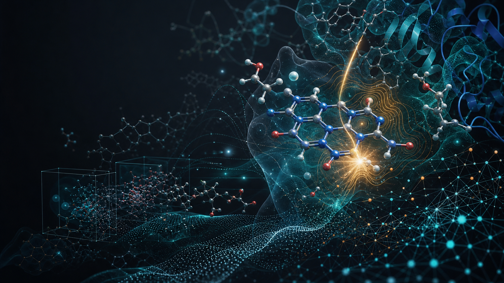

Molecular Interactions and AIIM
Ab initio interaction maps for visualizing and comparing molecular recognition patterns, contacts, and interaction landscapes.

Computational molecular science and automated discovery
We connect quantum chemistry, molecular simulation, photochemistry, environmental molecular science, and machine learning to understand how molecules interact, transform, and perform.
Lab focus
Kabir Lab develops and applies computational methods to study noncovalent interactions, excited-state chemistry, functional molecular systems, and environmental contaminants. The group emphasizes transparent protocols, reproducible workflows, and student-centered research training.
Research
The lab combines theory, computation, and automation to move between molecular mechanism and broader chemical systems.
Ab initio interaction maps for visualizing and comparing molecular recognition patterns, contacts, and interaction landscapes.
Excited-state behavior, redox modulation, and functional photochemical motifs in flavin-inspired systems.
Molecular mechanisms that control persistence, transformation, and detection of contaminants in complex environments.
Models that bridge electronic structure, molecular mechanics, sampling, and dynamics for realistic chemical contexts.
Data-driven pipelines that accelerate screening, protocol execution, analysis, and functional molecular discovery.
People
The lab is organized for mentoring, collaboration, and clear project ownership across students, collaborators, and alumni.
Leadership for computational chemistry, molecular modeling, and student research training.
Students contribute to modeling workflows, molecular datasets, code, visualization, and manuscript preparation.
Projects are scoped to support skill development in Python, computational chemistry, literature review, and scientific communication.
The lab welcomes collaborations in photochemistry, environmental chemistry, medicinal chemistry, and molecular data science.
Alumni outcomes can be highlighted here as the group grows.
Projects
Map, compare, and interpret interaction features across molecular families and binding environments.
Discuss collaborationRelate substituent effects, photochemical response, and redox behavior in flavin-like systems.
Related outputsStudy molecular interactions, transformations, and environmental behavior of persistent contaminants.
ProtocolsUse electronic structure and dynamics to examine reactive states, pathways, and design principles.
Research areaIntegrate screening, descriptors, and simulation data to prioritize molecules with useful behavior.
Student projectsSupport external projects with modeling, analysis, reproducible workflows, and training materials.
Start a conversationPublications
Use this section to feature selected work, then maintain complete publication and presentation records as the lab expands.
Selected Publications
Curate the most representative publications for visitors who need a quick view of the lab's scientific direction.
All Publications
Maintain chronological references with DOI, journal, authors, and code or data links where available.
Preprints
Highlight manuscripts under review and invite scientific feedback.
Conference Presentations
Document invited talks, society meetings, undergraduate symposia, and collaborative presentations.
Software, Data, and Protocols
Connect papers to repositories, datasets, notebooks, and computational protocols.
Resources
News
The first public site structure is ready for GitHub Pages and the custom domain kabirlab.org.
New manuscripts, datasets, and conference outputs will appear here as they become public.
Use this stream for awards, posters, research milestones, and student-led work.
Opportunities
Kabir Lab welcomes motivated students interested in computational chemistry, molecular modeling, environmental chemistry, programming, and data-driven discovery.
Students can join projects that build skills in scientific programming, computational protocols, molecular visualization, and literature-driven research questions.
Collaborative and remote-friendly projects can be scoped around datasets, workflow automation, or computational analysis.
Students are expected to document work carefully, communicate progress, respect data integrity, and grow toward independent scientific judgment.
Project openings can be listed by semester with required background, expected timeline, and training outcomes.
Until the form is connected, interested students should email a short research interest statement, transcript or CV, and weekly availability.
contact@kabirlab.orgTeaching and Outreach
Course materials and computational modules can be linked here for students at Savannah State University.
Short-format training in molecular visualization, command-line tools, Python, and reproducible research.
Step-by-step learning paths for electronic structure, molecular dynamics, and workflow automation.
Outreach and collaborative programs that expand access to computational molecular science.
Contact
For collaboration inquiries, student research opportunities, or questions about computational protocols, contact the lab and include a concise note about the project or opportunity.
Savannah State University
Savannah, Georgia
GitHub, Google Scholar, ORCID, LinkedIn, and university profile links can be added here.
Collaboration InquiriesShare the research question, expected timeline, available data, and desired outcome.